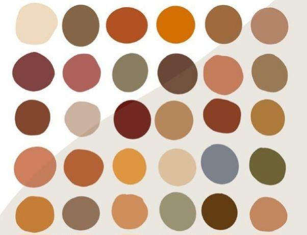

Home
Registry
RSVP
Photos
Contact Us
To be determined
Yes! The dress code is Cocktail Attire (semi-formal). For men, we recommend a suit & tie or khakis and a nice button-up with dress shoes. For women, we recommend cocktail dresses. If you are unsure of what color to wear, we have a color palette below! Please no jeans or sneakers.
We have chosen to have a small intimate wedding with close friends and family. The venue we have picked only allows for a small number of people and does not allow for anyone to bring plus ones. Thank you for coming and celebrating with us!
Please RSVP no later than October 1, 2024. The earlier, the better! You can RSVP in the RSVP tab.
The ceremony begins at 3:30pm, so please arrive before 3pm to find a seat and socialize before the ceremony begins.